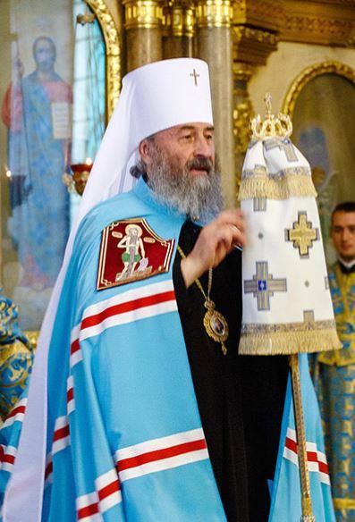
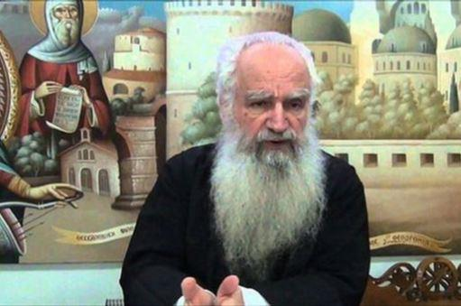
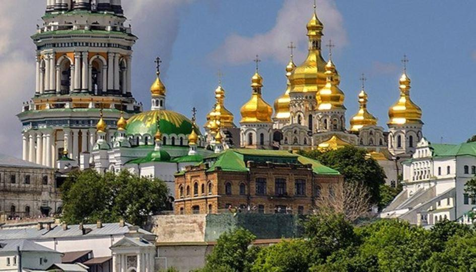
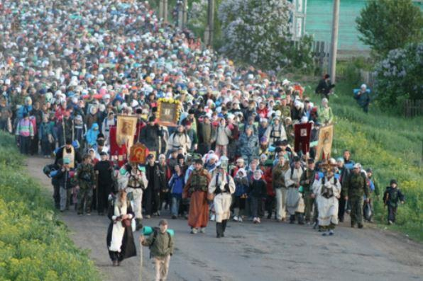
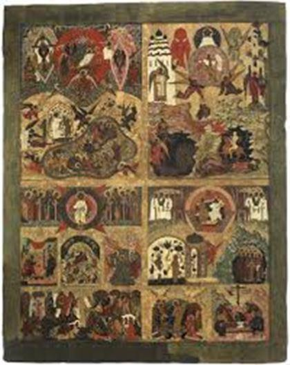

Je me suis un temps impliquée dans la défense du Donbass, et je ne veux pas dire que je l’abandonne, mais celle-ci étant avant tout l’affaire d’idéologues, et n’étant point de cette trempe, j’ai été portée par les événements, mon inclination et ma nature, à prendre celle de l’Église canonique d’Ukraine, qui est beaucoup plus dans mes cordes et complète du reste la lutte du Donbass pour son existence ; d’ailleurs tout se complète, mais si l’on parle peu du Donbass, si les médias occidentaux observent là-dessus une omerta criminelle, quand ils ne mentent pas carrément, les déboires de l’Église d’Ukraine sont assez peu suivis, même par les spécialistes avertis du Donbass, à l’exception notable de Christelle Néant. J’ai donc ouvert un groupe pour soutenir le métropolite et son troupeau, soutenus sans doute plus effectivement par leurs propres prières et les nôtres, mais cela permet de regrouper des informations sur la question, et aux orthodoxes français, visés en priorité, de savoir à qui et à quoi ils ont affaire.
Pourtant, je suis persuadée que ce qui se joue là-bas, avec l’Église et le métropolite Onuphre, est d’une extrême importance, même au niveau politique. Mais pour moi, naturellement, c’est important d’abord au niveau religieux et métaphysique. Car ce qui me frappe, depuis que j’ai entendu parler du métropolite Onuphre à l’occasion des grandes processions organisées par lui en vue de prier pour la paix et d’affirmer l’appartenance de la Russie et de l’Ukraine à une même histoire spirituelle et culturelle, c’est que soit apparu, précisément dans ce trou noir ouvert par la politique occidentale au flanc de la Russie, mais aussi par contrecoup, au nôtre, cet abcès suintant et purulent qui peut tout gangréner, un homme d’une telle spiritualité, d’une telle bonté, d’une telle honnêteté et d’un tel charisme.
Il aurait pu devenir patriarche de Moscou. Mais Dieu en a décidé autrement, c’est-à-dire qu’Il l’a trouvé plus utile à la tête de l’Église ukrainienne. Ou disons, Petite-Russienne, pour la différencier de la création synthétique douteuse du patriarche Bartholomée et de ses comparses, et de l’idée même d’Ukraine, ce golem fabriqué par les soviétiques à partir de morceaux mal cousus ensemble, puis entériné par les Américains, et livré maintenant en partie à la vengeance des galiciens uniates qui n’ont jamais mis fin à leur guerre de 40, et aux services secrets américains et israéliens profondément russophobes, on peut même dire anti slaves, qui les manipulent.
Je vois en la présence providentielle du métropolite Onuphre à la tête de l’Église ancestrale, commune aux Russes et aux Petits-Russiens depuis le baptême de la Russie dans les eaux du Dniepr au X° siècle, un signe : dans la confusion montante, au sein des manipulations de plus en plus fourbes et infâmes, sous les calomnies les plus impudentes, le métropolite Onuphre se dresse comme la lumineuse bannière de l’orthodoxie qui peut orienter tous les orthodoxes doués de discernement : dans le combat métaphysique, et subséquemment politique, qui se livre en ce pays déshonoré, d’où rien de bon ne provient plus, voilà un métropolite digne des grands saints d’autrefois, doux, inébranlable, humain, au-dessus des partis, et capable de fédérer, sans même le chercher, par sa seule lumière, les meilleurs éléments non seulement d’Ukraine, mais du monde entier. Il est bien connu que lorsqu’une lampe s’allume dans une cave, elle fait fuir la vermine et attire les créatures du soleil et de l’air libre.
Quand on connaît le métropolite Onuphre, qu’on observe ses hiérarques et ses fidèles, et qu’on a la foi orthodoxe, on voit tout de suite de quel côté est le Christ, on voit aussi la différence entre deux populations : les Petits-Russiens, enracinés dans leur religion et leur culture ancestrale, qui ressemblent étonnamment aux photos des Russes prérévolutionnaires, ou même à celles des victimes, par exemple, du Polygone de Boutovo, avec de beaux visages dignes, des comportements calmes, fervents, et les adeptes de la secte nouvelle de Bartholomée, haineux, convulsés, politisés, qui tabassent des prêtres et des grands-mères en brandissant des drapeaux douteux, et ne croient visiblement ni à Dieu ni à diable. Ces drapeaux, en France, provoqueraient un tollé, mais curieusement, les plus acharnés traqueurs de quenelles et de croix celtiques ne les voient pas, même quand on les brandit par milliers.
J’ai traduit récemment un ouvrage lui-même traduit du grec, du théologien Théodore Zissis, à qui ses positions valent pas mal d’ennuis, qui dénonce l’interprétation tendancieuse des textes historiques invoqués par Constantinople pour justifier son hold-up sur les paroisses ukrainiennes à l’intérieur du pays ou dans la diaspora1.
Il remet en place également les événements historiques, tels que je les ai moi-même appris autrefois et non tels qu’on les réécrits sur commande de la CIA et de ses émissaires, en Ukraine, et en Europe. Il faut toujours, à mon avis, de nos jours relier un événement local à l’ensemble de ce qui se produit dans le monde, observons donc que cette réécriture de l’histoire a lieu aussi chez nous, où l’on nous met des africains partout, à des époques où ils n’ont pu être présents que de façon tout à fait fortuite, et extrêmement rare, où l’on supprime Verdun des manuels scolaires, et où l’on attribue aux Arabes une influence culturelle qui était, pour eux comme pour nous, principalement celle de Byzance. Il en est de même avec l’Ukraine, à qui on bourre le mou depuis vingt ou trente ans, et on cherche à le faire aussi avec la Russie, c’est là la mission numéro un du regrettable centre Eltsine de Ekaterinbourg, construit dans le but de favoriser une sécession ultérieure de la région, avec la bénédiction de l’ambassade américaine. Mais se croire d’une autre essence que les Russes, et victimes d’eux depuis la nuit des temps, au lieu d’assumer avec eux les erreurs soviétiques et des conséquences qui ont touché tout le monde et dont tout le monde était responsable, c’est tellement tentant quand on est dans la merde, et quand on est libéral déraciné ou galicien, arraché par la guerre au giron polonais tellement plus chic, tellement plus européen. Je ne m’attarderai pas sur les déceptions qui attendent les fanatiques de « l’Eurosoïouz » et dont ils font déjà parfois l’expérience. Contrairement à ce qu’ils disent, et à ce que répète l’endoctriné français et européen, l’Ukraine, ou plutôt la Petite-Russie (le mot Ukraine signifiant « Région frontalière », est-il possible à un pays normal de s’appeler « Région Frontalière » ?) et la Russie ne formaient, au moment où saint Vladimir a baptisé son peuple, qu’une seule entité ethnique, spirituelle et culturelle, même si ses divers princes pouvaient être divisés et s’allier au gré de leurs intérêts , qui aux Tatars et qui aux Polonais. Il n’y avait pas grand monde dans les forêts du nord. Les villes qui y apparurent furent fondées par des gens venus du sud ou de Novgorod. C’est ainsi que la ville où je suis a été fondée par des colons de Pereïaslavl, actuellement en Ukraine, et qui ont même donné à la rivière locale celui de celle qu’ils avaient quitté : Troubej. Le fondateur de Moscou repose, lui, dans la Laure des Grottes de Kiev. C’est sous la pression des Tatars, au XII° siècle, et des ravages opérés dans le sud de la Russie, que les Russes sont remontés vers le nord, et sous l’effet des conquêtes tatares et polonaises, qu’ils se sont trouvés peu à peu scindés en trois Russie, que l’histoire avait finalement réunies sous la couronne du tsar de Moscou. Les Français qui me parlent avec sévérité des « colons russes » amenés en Ukraine artificiellement au XIX° siècle, comme si de toute éternité, les Ukrainiens avaient formé un peuple différent, sont dans le délire complet et la désinformation historique, mais le leur dire les faits tomber en convulsion : court-circuit du programme ?
Après le baptême de la Russie, il n’y avait qu’une seule métropole, pour tout son territoire, de la mer Noire jusqu‘à Novgorod, celle de Kiev. Kiev ayant été ruinée par les Tatars, et s’étant vidée de ses habitants, la métropole de Kiev fut transférée dans un lieu plus tranquille, à Vladimir, dans le nord, mais elle conservait sa dénomination de métropole de Kiev. Et les Russes remontés vers le nord pour la même raison, se souvenaient de Kiev comme d’un paradis perdu, plus chaud, plus fertile, où la vie était plus douce. Cependant, dès le XIV° siècle, se manifestèrent des tentatives étrangères, et occidentales, pour scinder cette métropole et fabriquer une métropole concurrente sous contrôle qui serait plus facile à « catholiciser », en particulier pour les conquérants polonais. Certains patriarches s’y prêtèrent, en particulier celui qui avait signé l’union de Ferrare-Florence, mais cela avait toujours été éphémère, la sagesse l’avait toujours emportée et le souci de paix et de concorde, car à chaque fois que cette opération avait été pratiquée, cela avait entraîné, comme du reste aujourd’hui, le trouble, la guerre civile, et une pénétration uniate des régions concernées. Jusqu’à ce que l’intégration de la métropole de Kiev dans le patriarcat de Moscou, que Constantinople conteste aujourd’hui, s’inscrivant dans cette même lignée hérétique et fauteuse de troubles de patriarches douteux, mette fin à ces manœuvres, et cela au lendemain de l’occupation de Moscou par les Polonais.
Il est évident que les trois Russie ont développé des différences locales sur un fond slave et orthodoxe commun. Mais quand on est orthodoxe, et donc enraciné dans la tradition orthodoxe, très ancienne et toujours vivace, et dans sa propre tradition culturelle historique, car cela va généralement ensemble, on est beaucoup moins sensible à la propagande et aux manipulations que le mutant contemporain hagard. Pour les 80% d’orthodoxes que l’on voudrait, en Ukraine, rendre étrangers à leur propre pays, leur Église est la seule vraie depuis le X° siècle, leur parenté avec les Russes, évidente, incontestable, qu’ils soient ou non séparatistes. Ils savent bien qu’en dépit de quelques nuances, ils seront toujours beaucoup plus proches de leurs équivalents russes que d’un Américain, d’un Anglais, d’un Français ou même d’un Polonais, et que ce nationalisme haineux et hystérique n’a rien à voir avec le profond sentiment de filiation naturelle que l’on éprouve envers sa patrie charnelle et spirituelle, celle de ses plus lointains ancêtres, bâtisseurs des églises et des monastères en voie de confiscation. De plus, quand on est orthodoxe, on fait la différence entre un vrai pasteur et un « loup ravisseur », entre la parole de Dieu et les boniments du diable, entre le visage d’un saint et celui d’un escroc, entre l’original et la contrefaçon.
Pourtant, les schémas mis en place par la propagande fonctionnent encore, chez ceux qui n’ont pas trouvé dans l’orthodoxie le moyen de libérer leur âme des déterminismes du monde. Les gens se croient toujours 50 ans en arrière et agitent à longueur de commentaires le fantôme du KGB. Sans voir que ce sont précisément les méthodes du KGB et de la Gestapo réunies en l’hybride du SBU qui sont à l’œuvre là-bas, et que le totalitarisme a changé d’avatar.
Nous aurions, à la tête de l’Église canonique, un simple fonctionnaire ecclésiastique que les choses seraient peut-être moins claires, les fidèles moins fermes. Mais Dieu a pris soin, à ce moment décisif et dangereux, de donner à ses brebis ukrainiennes le meilleur des pasteurs. Et nous, à l’étranger, même si nous ne connaissons pas tout ce qui se passe là-bas, nous avons la chance de pouvoir nous repérer dans le tumulte, dans cette tempête que l’affaire a soulevée dans l’Orthodoxie, sur cette bannière autour de laquelle se rassemblent les fidèles persécutés, l’inébranlable et toujours si attentif et compatissant métropolite Onuphre. Quand on y regarde bien, c’est même là-bas la seule personnalité publique, à ma connaissance, qui soit irréprochable et ne se laisse intimider par rien. Et les gens le sentent, le respectent, ils l’aiment, ils ne le lâchent pas. Qu’y a-t-il de vrai, d’aimable, de compatissant, chez ceux qu’on lui oppose ?
Si l’on s’inscrit dans une perspective purement politique, on n’en sortira jamais de ces ornières cent fois creusées de l’opposition illusoire du capitalisme libéral et de son pendant communiste qui revêtent différentes formes au gré des époques ou des lieux géographiques, de ces accusations mutuelles et dépassées, de ces amalgames entre les peuples et les idéologies dont ils sont victimes. Cela fausse complètement le débat.
Car l’hydre est devenue mondiale, le cancer a des métastases partout, et aussi en Russie, que l’on présente comme le bastion de la résistance ou la source du mal universel selon le parti que l’on adopte. Le bastion de la résistance, c’est le métropolite Onuphre et ses 80 % d’orthodoxes : ils viennent tranquillement du fond des siècles, avec icônes, bannières et prières, et nous font signe : restez fidèles à vous-mêmes, à votre foi, à vos racines, et passez au-dessus de ces clivages artificiels qui servent à nous diviser, tandis qu’on nous asservit en bloc et qu’on nous pervertit en bloc, à un niveau largement supranational. Le métropolite Onuphre a certainement des équivalents russes « dormants », ou serbes, ou bulgares, de ces soldats du Christ qui restent pour l’instant dans son armée de réserve, mais qui seront requis, comme nous tous, au moment du dernier combat.
Cette résistance orthodoxe et traditionnelle enrage d’ailleurs autant les libéraux russes que les Américains ou les Européens, et les méthodes d’extermination massive utilisées après 1917 font place à des manœuvres beaucoup plus retorses. L’affaire d’Ukraine s’inscrit dans une machine de guerre lancée contre l’Orthodoxie toute entière, et qui répond du reste à la destruction antérieure du catholicisme romain, dénaturé par Vatican II et à mon avis largement infiltré par des forces qui, justement, n’ont rien de très catholique.
Dans les années 80, un moine américain converti à l’Orthodoxie, le père Seraphim Rose, avait écrit un livre intitulé « l’Orthodoxie et la religion du futur », où il dénonçait l’œcuménisme comme devant introduire à terme une religion syncrétique de type new âge, projet qui convient parfaitement à la dictature montante du Nouvel Ordre Mondial, et le patriarche Athénagoras, instigateur orthodoxe de l’œcuménisme avec Paul VI, était soutenu et même dirigé par les Américains.
Quand je l’avais lu, dans les années 90, je l’avais un trouvé un brin excessif, mais je vois de plus en plus à quel point il était juste.
J’ai lu dernièrement un article dont voici le lien, sur le « grécoprotestantisme », qui a ses soutiens, en occident, où l’on me parlait parfois d’une « orthodoxie occidentale intelligente et éclairée », et malheureusement, également en Russie, de façon plus marginale2. Les intellectuels et journalistes libéraux font d’ailleurs souvent l’éloge du protestantisme, source de la prospérité occidentale (et d’une civilisation industrielle abominable qui nous conduit de façon évidente à notre disparition physique en passant par notre avilissement moral complet). Je renvoie le lecteur à un lien à ce sujet3.
La démarche du patriarche Bartholomée, et la façon dont s’engouffre dans la brèche la nouvelle « Église » d’Ukraine, prête à l’uniatisme et à toutes sortes de réformes hasardeuses occidento-compatibles, laisse présager que cela est bien le plan, et que comme l’hérésie protestante s’est divisée en toutes sortes de sectes, le grécoprotestantisme, ou phanarodoxie, se divisera lui-même en toutes sortes de trognons d’églises insignifiants autant qu’intelligents et éclairés.
Les chrétiens orthodoxes, eux, resteront orthodoxes dans la débâcle, le regard fixé sur le premier pilote de notre dernière arche, le métropolite Onuphre, à qui je souhaite longue vie. L’Ukraine n’a pas apporté que de bonnes choses à la Russie, après leur réunification du XVII° siècle, car en deux siècles de domination polonaise et uniate, elle avait été imprégnée de théologie catholique, sa liturgie, ses icônes subissaient une forte influence occidentale, et comme par un fait exprès, une grande quantité de prêtres ukrainiens ont été invités en Russie à ce moment-là, et sont arrivés avec tout leur mépris occidentalisé pour une tradition qu’ils ne comprenaient plus, c’est ainsi que l’un d’entre eux avait ouvert une fenêtre à l’emplacement du Christ, dans le Jugement dernier de Dionysi, à Ferapontovo.
Mais on dirait que par une ironie spirituelle de la providence, le salut eschatologique de la Russie et de l’Orthodoxie peut venir, cette fois, de l’Ukraine en grand péril et de ses fermes croyants qui sont déjà des confesseurs de la foi.
Et j’aime à croire que ces fermes croyants seront même la pierre d’achoppement sur laquelle trébucheront les créateurs internationaux de golems territoriaux et idéologiques, avec toute leur malfaisance.
Partager cette page